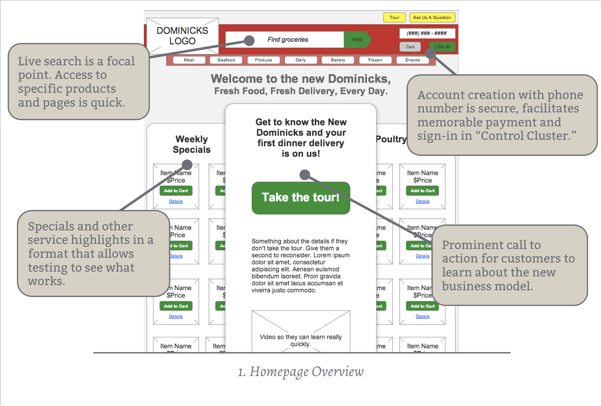

Dominicks Refresh
Dominick’s is a struggling grocery chain that wants to reimagine the grocery business, lower the overhead cost for stores, and increase product throughput.
Problem Definition
How can we build a digital tool to make grocery shopping efficient and offer convenient delivery options while encouraging customers to live healthier lives? These requirements were part of the design brief:
- Site should feature easy-to-use navigation that covers the primary areas
- Users should be able to review weekly specials from the homepage
- Site should provide the ability for frequent shoppers to log in to the site
- Users should be able to browse for grocery items as well as search for them directly
- Site should feature a help/support mechanism
Audience
The target customer for this experience was urban professionals who do not have time to go grocery shopping regularly, but who want to eat healthy food prepared at home.
Team / Role
I performed data collection, service design, and interaction design on this project.
Constraints
Not having access to customer data and demographic information made this project difficult. The technical feasibility was also questionable, though I believe it is realistic.
Design Process
My first step was to consider the context of urban professionals, in this case my coworkers. Some themes I identified:
- Most commuted on the CTA and a few took Metra.
- Most either shopped after work a few nights a week or ate out.
- All had considered using Peapod or a similar service.
With this knowledge in hand I felt I knew how to position Dominicks in an innovative way.

The Customer Experience
Last mile delivery is a big differentiator and a sticky subject, but I feel the Pareto Principle is a good guide for solving this.
If Dominick’s can do 20% of the last mile delivery effort, they should see 80% of the return last mile would deliver (pun intended).
There are additional benefits to this “20% last mile” approach:
- With "pick-and-pack," volume throughput would increase without the need for expensive retail space.
- Both tiered delivery and new customer incentives build low-stakes brand familiarity.
The tiered delivery model I propose allows Dominick’s to improve customer convenience and service as well as online and on-ground presence. The three primary methods of grocery delivery include:
- Free in-store pickup at all Dominick’s locations.
- “Food truck”-style pickup at high traffic locations such as El or Metra stops for a moderate charge (TBD).
- Home delivery for a premium charge (TBD).
This focus on convenience and service will lead to increased customer loyalty and revenue, and “food truck” pickup is great advertising.
Initial Engagement
Beyond offering physical convenience, Dominick’s will offer fresh, hand-picked meal ingredient packages which can be cooked at home by customers using the included recipe. These meals can be picked up from the food trucks using a smartphone app as a secure authentication method.
For the interaction design portion of the exercise, I created pages to simulate the customer-facing experience. The first stop is a tour to engage customers with the new face of Dominick’s and highlight their new product offerings.
{kind=link}
{kind=link}
During the tour, customers are encouraged to try picking up a free meal they are given just for signing up. This rewards customers for engaging with Dominick’s and helps them painlessly understand the new process.
Convenience and Health
For customer service, the focus is on providing immediate answers to customer questions by having customer service representatives call busy customers or if the customer would prefer they can search the site’s support portal for answers. This means no waiting on hold so the concierge aspect of the new experience stays intact.
{kind=link}
{kind=link}
The site will provide a few ways to filtering options to help customers easily find meals. This filtering familiarizes customers with Dominick’s offerings and site interaction patterns.
Searching, Finding, and Purchasing
Grocery pages have large images of items with clear labels to aid findability, while item details provide all product information to the customer. When adding products to the cart, a clear animated affordance (fig. 7) is shown with a simple way for the customer to remove any mistakenly added items.
{kind=link}
{kind=link}
{kind=link}
The cart and settings views are simple, providing clear hierarchy and grouping to keep things simple. No extra details are shown, but updating any account information in the cart or in the settings is just a click or two away.
{kind=link}
{kind=link}
Retrospective
I feel this project was a great test of my skills and covered the breadth of what I am interested in, from research to service design to interaction design.
If I had more time to work on this project, I would definitely do more research into the feasibility of foodtruck-style delivery and would ideate more when creating the wireframes and interaction flows.

Chicago Transit Authority Signage Design
Guerrilla Usability Research

iOS Today View Concept

Imgur Upload Enhancement

Formative Resale Research